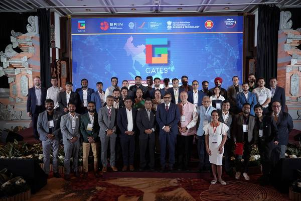

On the farm, at summits and in the classroom
Field visits, farmer meetings, training programmes, exhibitions, award ceremonies and the projects we are part of.
Gallery

Company film
Who we are and what we do

Matsya Sathi app
AI / digital promotional video

From our warehouse to your pond
Aquaculture service journey

Farmer interaction
Adopt the Village, East Midnapore

Product videos
Aerators and farm equipment

Events and exhibitions
Aqua North-East Summit 2025
Brochure
Aqua Doctor Solutions company brochure
Our services, products and projects in one document. Download it to read offline or share it with your team.
Download Brochure (PDF)
Client content required Put the PDF at images/media/ads-brochure.pdf and the cover at images/media/ads-brochure-cover.jpg.
Awards and press
Looking for awards or news coverage?
The full awards register and press coverage are on the Achievements page.